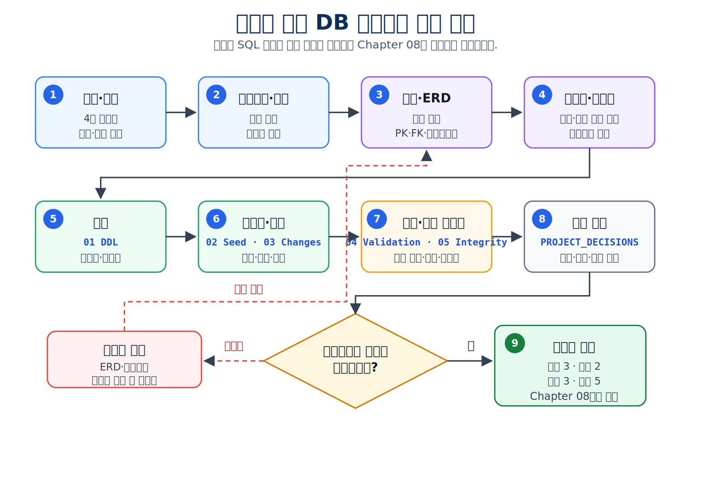
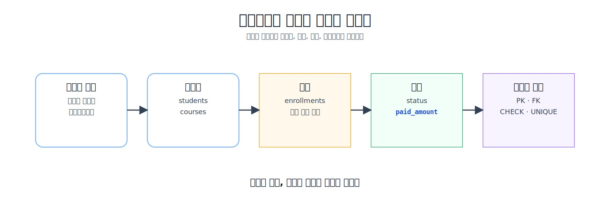
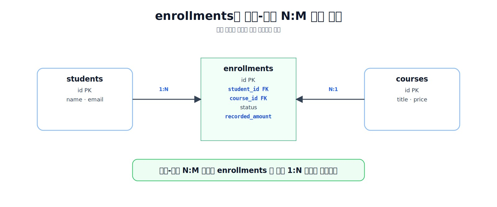
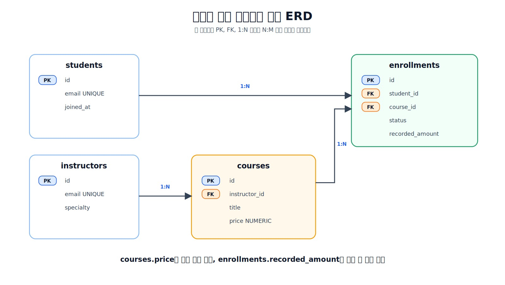
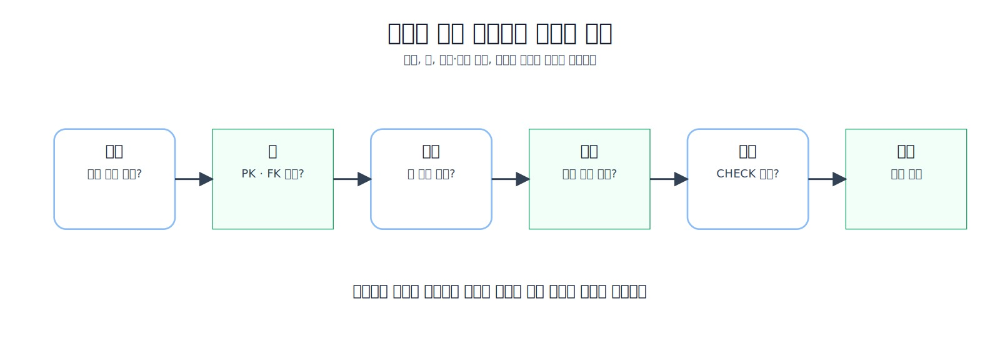
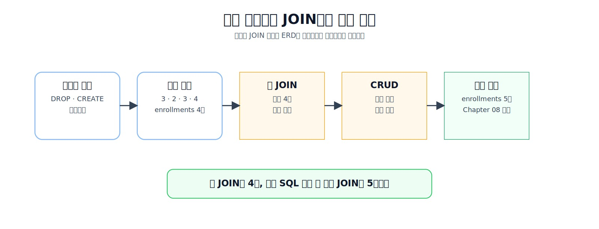
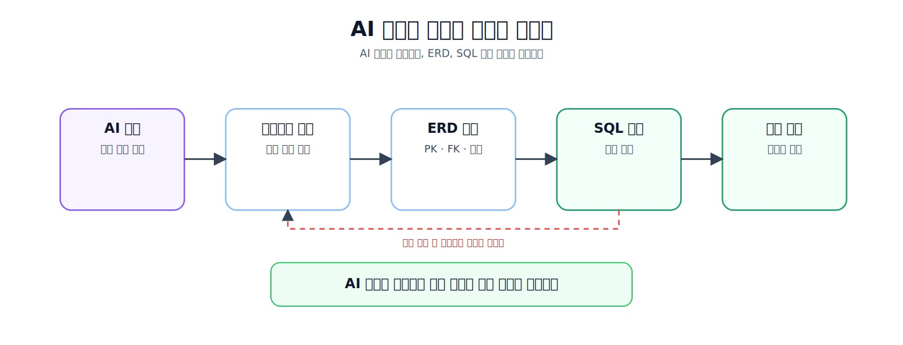
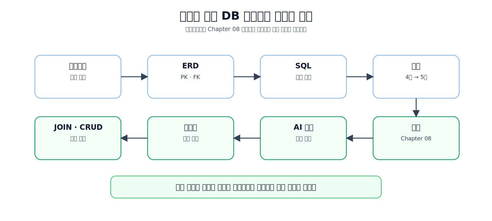

실전 프로젝트 1: 온라인 강의 수강신청 DB 완성하기
지금까지 배운 SQL, 요구사항 분석, ERD, 정규화와 무결성을 하나로 연결해 다른 사람이 같은 순서로 실행하고 같은 결과를 재현할 수 있는 온라인 강의 수강신청 데이터베이스 프로젝트를 완성합니다.
설계 근거와 실행 결과를 다른 사람이 같은 방식으로 재현하려면 무엇이 필요할까?
이 장을 시작하기 전에
이 장은 Chapter 04의 기본 SQL, Chapter 05의 요구사항 분석과 ERD, Chapter 06의 정규화와 데이터 무결성을 하나의 프로젝트로 연결합니다. 별도의 프로젝트 경험은 필요하지 않지만, 테이블의 한 행 의미와 기본키·외래키의 역할을 설명할 수 있어야 합니다.
프로젝트 주제는 온라인 강의 수강신청 데이터베이스입니다.
프로젝트 범위 결정
→ 핵심 요구사항과 설계 결정 구분
→ 테이블별 한 행의 의미와 관계 작성
→ ERD·정규화·무결성 검토
→ 전용 스키마와 샘플 데이터 생성
→ 안전한 변경 시나리오 실행
→ 자동 검증과 설계 결정 기록

그림 7-1 온라인 강의 데이터베이스 프로젝트 핵심 흐름
이 장을 마치면
다음 작업을 수행할 수 있습니다.
- 프로젝트의 포함·제외 범위를 정한다.
- 요구사항과 프로젝트 결정을 구분한다.
- 테이블별 한 행의 의미와 관계를 설명한다.
- 전용 스키마에 프로젝트 구조를 생성한다.
- 검증 목적의 샘플 데이터를 설계한다.
- 예상 이전 상태를 확인하며 데이터를 변경한다.
- 자동 검증으로 최종 상태를 판정한다.
- 설계 결정과 실행 결과를 다른 사람이 재현할 수 있게 기록한다.
학습 표시
- 핵심 학습: 프로젝트를 생성하고 최종 검증까지 완료하는 최소 경로
- 선택 학습: 경계·오류 테스트, 전체 추적표와 AI 제안 검토
- 심화 학습: 결제·상태 이력·정원·통합 계정으로 확장하는 내용
핵심 원칙
프로젝트 완료는 SQL 파일이 존재한다는 뜻이 아닙니다. 다른 사람이 같은 순서로 실행해 같은 구조와 데이터를 만들고, 각 설계 선택의 근거와 검증 결과를 설명할 수 있어야 합니다.
1. 프로젝트 목표와 최소 완료 경로
처음 학습하는 독자는 다음 네 파일을 순서대로 실행하면 핵심 프로젝트를 완료할 수 있습니다.
01_course_project_schema.sql
→ 02_course_project_seed.sql
→ 03_course_project_changes.sql
→ 04_course_project_validation.sql
선택 활동은 다음 파일과 문서로 확장합니다.
05_course_project_integrity_tests.sql
06_course_project_optional_tests.sql
PROJECT_DECISIONS.md
핵심 경로의 완료 기준은 다음과 같습니다.
course_project 스키마와 네 테이블이 존재한다.
최종 행 수가 3 / 2 / 3 / 5이다.
신청 1001은 완료, 1004는 취소, 1005는 신청 상태이다.
고아 관계와 활성 중복 신청이 없다.
최종 기록 금액 검산값이 예상과 일치한다.
2. 프로젝트 산출물과 실행 파일
| 산출물 | 확인 내용 |
|---|---|
| 프로젝트 범위 | 포함·제외 기능과 단순화 가정 |
| 핵심 요구사항 | 반드시 저장하고 지켜야 할 데이터와 관계 |
| 프로젝트 결정 | 이번 버전에서 명시적으로 선택한 정책 |
| 미확정 질문 | 운영 전에 추가로 확인할 정책 |
| 테이블 정의 | 한 행의 의미, 열과 키 |
| 관계 문장·ERD | 카디널리티와 외래키 위치 |
| PostgreSQL 파일 | 스키마, 샘플, 변경, 검증과 테스트 |
| 설계 결정 기록 | 선택한 구조, 대안, AI 제안과 실행 결과 |
code/chapter07/
├── 01_course_project_schema.sql
├── 02_course_project_seed.sql
├── 03_course_project_changes.sql
├── 04_course_project_validation.sql
├── 05_course_project_integrity_tests.sql
├── 06_course_project_optional_tests.sql
├── reset_course_project.sql
├── PROJECT_DECISIONS.md
├── online_course_project.sql
└── README.md
online_course_project.sql은 기존 링크 호환을 위한 읽기 전용 확인 파일입니다.
3. 전용 스키마와 프로젝트 범위
프로젝트 객체는 course_project 스키마에 생성합니다.
course_project
├── students
├── instructors
├── courses
└── enrollments
전용 스키마를 사용하면 앞 장의 public.students 같은 동명 테이블과 충돌하지 않고, Chapter 08 이후에도 프로젝트 데이터를 명확히 참조할 수 있습니다.
SELECT *
FROM course_project.students;
모든 객체에 스키마를 명시하므로 current_schema()가 course_project일 필요는 없습니다. 실행 전 다음 위치 정보를 확인합니다.
SELECT current_database();
SELECT current_user;
SELECT current_schema();
SHOW search_path;
포함 범위
학생
강사
강의
수강신청
신청 상태
강의 기준 가격
신청 시 기록 금액
제외 범위
실제 결제 시도·승인·실패·환불 이력
강의 정원과 대기열
상태 변경 전체 이력
진도·수료·강의 콘텐츠
수강평·쿠폰·할인 적용 이력
범위 제외는 중요하지 않다는 뜻이 아니라, 현재 프로젝트에서 다루지 않는다는 뜻입니다.
4. 핵심 요구사항·결정·미확정 질문
본문에서는 대표 항목만 사용하고 전체 목록은 PROJECT_DECISIONS.md에 기록합니다.
핵심 요구사항
| ID | 요구사항 |
|---|---|
P07-R01 |
학생은 이름, 이메일과 가입일을 가진다. |
P07-R02 |
강사는 이름, 이메일과 전문 분야를 가진다. |
P07-R03 |
강의는 제목, 선택 설명, 난이도, 기준 가격과 개설일을 가진다. |
P07-R04 |
하나의 강의는 정확히 한 강사를 참조한다. |
P07-R05 |
수강신청은 학생, 강의, 신청일, 상태와 신청 시 기록 금액을 가진다. |
P07-R06 |
상태는 신청, 수강중, 완료, 취소 중 하나다. |
P07-R07 |
학생·강사 이메일은 각 테이블 안에서 공백·동일 문자열 중복이 허용되지 않는다. |
P07-R08 |
가격과 신청 시 기록 금액은 음수일 수 없다. |
P07-R09 |
존재하는 학생·강사·강의만 참조한다. |
프로젝트 결정
| ID | 결정 | 구현 |
|---|---|---|
P07-D01 |
무료 금액은 0으로 표현하고 NULL·음수는 허용하지 않음 |
NOT NULL, CHECK >= 0 |
P07-D02 |
할인 기능이 없는 현재 범위에서는 신청 생성 시 courses.price를 recorded_amount에 복사해 보존 |
INSERT ... SELECT + NUMERIC(12, 0) |
P07-D03 |
진행 중 중복 신청 금지 | 부분 고유 인덱스 |
P07-D04 |
상태 변경 전에 예상 이전 상태 확인 | 조건부 UPDATE |
P07-D05 |
학생과 강사는 별도 역할 | 별도 테이블 |
P07-D06 |
참조 중 부모 삭제 제한 | ON DELETE RESTRICT |
대표 미확정 질문
P07-Q01 학생과 강사 사이에서도 이메일을 전역 고유하게 제한해야 하는가?
P07-Q02 탈퇴 시 개인정보와 신청 이력을 어떻게 보존·익명화하는가?
P07-Q03 상태 전이와 변경 이력을 어느 수준까지 DB에서 관리하는가?
미확정 질문을 설계자가 임의로 제약조건으로 바꾸지 않습니다.
5. 테이블별 한 행의 의미
요구사항을 구조로 바꾸기 전에 각 테이블의 한 행 의미를 고정합니다.

그림 7-2 요구사항에서 엔터티·속성·사건 도출하기
| 테이블 | 한 행의 의미 |
|---|---|
students |
학생 한 명 |
instructors |
강사 한 명 |
courses |
개설된 강의 한 개 |
enrollments |
특정 학생의 특정 강의 신청 사건 한 건 |
enrollments는 단순 연결 테이블이 아닙니다. 다음 사건 속성을 가집니다.
enrolled_at
status
recorded_amount
이 값들은 학생 전체나 강의 전체가 아니라 특정 신청 사건에 속합니다.
6. 관계 문장과 ERD
ERD를 그리기 전에 관계를 양방향 문장으로 작성합니다.
한 강사는 0개 이상의 강의를 담당할 수 있다.
한 강의는 정확히 한 명의 강사를 참조한다.
한 학생은 0개 이상의 수강신청을 가질 수 있다.
한 수강신청은 정확히 한 명의 학생을 참조한다.
한 강의는 0개 이상의 수강신청을 가질 수 있다.
한 수강신청은 정확히 한 개의 강의를 참조한다.
instructors 1 ─── 0..N courses
students 1 ─── 0..N enrollments
courses 1 ─── 0..N enrollments
학생과 강의의 N:M 관계는 enrollments를 통해 두 개의 1:N 관계로 바뀝니다.

그림 7-3 enrollments로 학생-강의 N:M 관계 해소

그림 7-4 온라인 강의 수강신청 핵심 ERD
7. 현재 사실과 신청 당시 사실
금액 열은 다음 두 가지 사실을 구분합니다.
courses.price
→ 현재 강의의 기준 가격
enrollments.recorded_amount
→ 해당 신청이 만들어질 때 신청 행에 기록한 금액
두 값이 같아도 의미와 시점이 다릅니다. 이번 프로젝트에는 쿠폰·할인 기능이 없으므로 신청을 생성하는 순간의 courses.price를 recorded_amount에 복사합니다. 강의 가격이 나중에 바뀌어도 과거 신청의 recorded_amount는 자동으로 바뀌지 않습니다.
INSERT INTO course_project.enrollments (
id, student_id, course_id, enrolled_at, status, recorded_amount
)
SELECT
1005, 102, c.id, DATE '2026-04-07', '신청', c.price
FROM course_project.courses AS c
WHERE c.id = 302;
이 복사는 CHECK나 외래키가 자동으로 수행하는 기능이 아닙니다. 현재 프로젝트에서는 신청 생성 SQL이 값을 복사하고, 이후 검증 SQL이 기대 금액을 확인합니다. 다른 행·다른 테이블의 현재 값을 CHECK로 계속 비교해 과거 기록을 강제로 맞추는 방식은 사용하지 않습니다.
recorded_amount는 실제 결제 승인 금액을 뜻하지 않습니다. 결제·환불을 관리하려면 다음과 같은 별도 구조가 필요합니다.
payments
payment_events
refunds
이번 프로젝트에서는 실제 결제 거래를 다루지 않습니다.
금액 타입은 정확한 원 단위 값을 저장하기 위해 다음을 사용합니다.
NUMERIC(12, 0)
8. 정규화와 무결성 규칙

그림 7-5 온라인 강의 프로젝트 정규화 점검
| 사실 | 관리 위치 |
|---|---|
| 학생의 현재 정보 | students |
| 강사의 현재 정보 | instructors |
| 강의의 현재 정보 | courses |
| 신청 시점의 상태와 금액 | enrollments |
기본 무결성은 다음과 같이 구현합니다.
| 규칙 | 구현 |
|---|---|
| 행 식별 | PRIMARY KEY |
| 자동 내부 ID | IDENTITY |
| 필수값 | NOT NULL |
| 이메일 중복 금지 | UNIQUE |
| 공백·허용값·금액 범위 | CHECK |
| 존재하는 부모 참조 | FOREIGN KEY |
| 이력 보존 | ON DELETE RESTRICT |
| 진행 중 중복 신청 금지 | 부분 고유 인덱스 |
CREATE UNIQUE INDEX uq_course_enrollments_active
ON course_project.enrollments (student_id, course_id)
WHERE status IN ('신청', '수강중');
완료·취소 이력은 여러 건 존재할 수 있지만 현재 진행 중인 신청은 학생·강의 조합당 최대 한 건만 허용합니다. uq_course_enrollments_active는 UNIQUE 제약조건이 아니라 조건을 만족하는 행에만 적용되는 부분 고유 인덱스 객체입니다.
9. PostgreSQL 프로젝트 구조 만들기
01_course_project_schema.sql은 다음 작업을 하나의 트랜잭션으로 수행합니다.
현재 DB·DB의 `CREATE` 권한·쓰기 가능 상태·기존 스키마 확인
→ course_project 스키마 생성
→ 부모 테이블 생성
→ 자식 테이블 생성
→ 부분 고유 인덱스 생성
→ 객체 존재 확인
→ COMMIT
핵심 열은 다음과 같습니다.
price NUMERIC(12, 0) NOT NULL
CHECK (price >= 0)
recorded_amount NUMERIC(12, 0) NOT NULL
CHECK (recorded_amount >= 0)
생성 파일은 기존 객체를 자동으로 삭제하지 않습니다. 처음부터 다시 시작할 때만 reset_course_project.sql을 사용합니다.
10. 검증 목적의 샘플 데이터 입력
샘플 데이터는 행 수를 채우기 위한 값이 아니라 요구사항을 증명하기 위한 사례입니다.
| 샘플 | 검증 목적 |
|---|---|
| 학생 101의 신청 2건 | 학생 1:N 신청 관계 |
| 강의 301의 신청 2건 | 강의 1:N 신청 관계 |
| 강사 201의 강의 2개 | 강사 1:N 강의 관계 |
| 신청별 다른 상태와 금액 | 사건 속성 분리 |
기본 샘플 입력 직후 기대 행 수는 다음과 같습니다.
| 테이블 | 행 수 |
|---|---|
| students | 3 |
| instructors | 2 |
| courses | 3 |
| enrollments | 4 |
02_course_project_seed.sql은 네 테이블이 모두 비어 있고 필요한 객체가 존재할 때만 데이터를 입력합니다. 전체 입력과 다음 자동 ID 조정은 하나의 트랜잭션으로 실행합니다.
고정 ID는 관계를 쉽게 확인하기 위한 학습용 선택입니다. 다음 자동 ID 조정은 실습 파일이 처리합니다.
11. 안전한 신청과 상태 변경
03_course_project_changes.sql은 다음 초기 상태를 자동으로 확인합니다.
enrollments = 4
1001 상태 = 수강중
1004 상태 = 신청
1005 행 없음
학생 102·강의 302의 활성 신청 없음
그 뒤 하나의 트랜잭션에서 다음 작업을 수행합니다.
신청 1005 추가
→ 신청 1001을 완료로 변경
→ 신청 1004를 취소로 변경
→ 최종 상태 검사
→ COMMIT
상태 변경에는 예상 이전 상태를 포함합니다.
UPDATE course_project.enrollments
SET status = '완료'
WHERE id = 1001
AND status = '수강중'
RETURNING id, status, recorded_amount;
예상 상태와 실제 상태가 다르면 전체 변경을 완료하지 않습니다. 조건부 UPDATE는 이 파일에서 실행하는 변경을 보호하는 방식이며, 모든 가능한 상태 전이를 데이터베이스 전체에서 강제하는 규칙은 아닙니다. 마지막 자동 검증까지 통과하지 못하면 같은 트랜잭션의 변경을 완료 상태로 보지 않습니다.
상태값과 상태 전이
CHECK는 저장 가능한 상태값만 제한합니다.
신청 / 수강중 / 완료 / 취소
상태 전이는 별도 정책입니다.
| 이전 상태 | 이번 프로젝트에서 허용하는 변경 |
|---|---|
| 신청 | 수강중, 취소 |
| 수강중 | 완료, 취소 |
| 완료 | 기존 행 유지, 필요하면 새 신청 |
| 취소 | 기존 행 유지, 필요하면 새 신청 |
완전한 상태 전이와 변경 이력은 확장 범위입니다.
12. 자동 검증으로 최종 상태 확인
04_course_project_validation.sql은 단순 조회에 그치지 않고 완료 조건을 자동 판정합니다.
students = 3
instructors = 2
courses = 3
enrollments = 5
고아 관계 = 0
도메인 오류 = 0
활성 중복 신청 = 0
1001 = 완료
1004 = 취소
1005 = 신청
전체 기록 금액 = 590000
취소 제외 기록 금액 = 440000
통과하면 다음 메시지가 출력됩니다.
Chapter 07 course project validation passed

그림 7-6 샘플 데이터와 조회로 설계를 검증하는 흐름
금액 검산 주의
전체 기록 금액과 취소 제외 기록 금액은 신청 행에 저장된 금액의 합계입니다. 실제 결제 승인액, 환불액이나 회계 매출을 의미하지 않습니다.
13. 경계·오류 데이터 테스트
핵심 테스트 파일은 대표 규칙만 확인합니다.
성공해야 하는 경계
무료 강의 price = 0
무료 신청 recorded_amount = 0
선택 설명 description = NULL
실패해야 하는 오류
대표 `NOT NULL` 위반
학생 이메일 중복
허용되지 않은 난이도
음수 recorded_amount
존재하지 않는 부모 참조
두 번째 활성 신청
참조 중인 부모 삭제
나머지 공백 문자열, 한 글자 이름, 완료 뒤 재신청과 참조되지 않는 부모 삭제는 06_course_project_optional_tests.sql에서 선택적으로 확인합니다.
오류 테스트는 한 번에 하나씩 실행하고, 수동 트랜잭션에서 오류 후 실패 상태가 되면 ROLLBACK합니다. 트랜잭션의 상세 원리는 Chapter 09에서 다룹니다.
14. 설계 결정과 AI 제안 기록
AI는 요구사항 정리, ERD·DDL 초안과 테스트 제안에 활용할 수 있습니다. 그러나 결과는 다음 질문으로 검토합니다.
1. 요구사항에서 테이블과 관계를 도출했는가?
2. 각 테이블의 한 행 의미가 명확한가?
3. 요구사항에 없는 정책을 임의로 추가했는가?
4. 현재 사실과 신청 당시 사실을 구분했는가?
5. 정상·경계·오류 테스트가 규칙과 연결되는가?
6. 실행 결과를 다른 사람이 재현할 수 있는가?

그림 7-7 AI 제안을 검토된 프로젝트 설계로 바꾸기
PROJECT_DECISIONS.md에는 다음을 기록합니다.
요구사항과 범위
선택한 구조와 검토한 대안
AI 제안과 사람의 최종 결정
실행 환경과 검증 결과
남은 질문과 Chapter 08 인계 상태
15. 프로젝트 완료 점검

그림 7-8 온라인 강의 데이터베이스 프로젝트 완성도 점검
| 영역 | 완료 기준 |
|---|---|
| 범위 | 포함·제외 기능이 구분됨 |
| 요구사항 | 핵심 요구사항과 프로젝트 결정이 구분됨 |
| 구조 | 한 행 의미·PK·FK·관계가 일치함 |
| 정규화 | 현재 사실과 신청 당시 사실이 구분됨 |
| 무결성 | 잘못된 값과 관계가 차단됨 |
| 변경 | 예상 이전 상태와 최종 상태를 확인함 |
| 검증 | 자동 검증 통과 메시지를 확인함 |
| 재현성 | 파일 순서와 초기화 방법이 문서화됨 |
| 기록 | 설계 결정과 실행 결과가 남아 있음 |
16. 확장 백로그
| 확장 기능 | 구조·규칙 후보 |
|---|---|
| 통합 사용자 계정 | users, roles, 학생·강사 프로필 |
| 실제 결제·환불 | payments, payment_events, refunds |
| 상태 변경 이력 | enrollment_status_history |
| 강의 정원·대기 | capacity, waitlist, 동시 신청 제어 |
| 강의 구성·진도 | sections, lessons, progress |
| 탈퇴·익명화 | 소프트 삭제, 개인정보 대체 정책 |
새 기능은 바로 열을 추가하지 않고 다음 순서로 검토합니다.
Chapter 07 독자 프로젝트 워크북에는 실행 결과와 설계 판단을 직접 기록할 수 있는 체크 항목이 있습니다.
새 요구사항
→ 새 사실과 규칙
→ 기존 속성인지 새 엔터티인지 판단
→ 관계·이력·동시성 검토
→ ERD·DDL·테스트 갱신
17. 핵심 정리와 Chapter 08 인계
Chapter 07에서는 다음을 하나의 프로젝트로 연결했습니다.
범위와 요구사항
→ 한 행 의미와 관계
→ 정규화와 무결성
→ 전용 스키마와 테스트 데이터
→ 안전한 변경
→ 자동 검증
→ 설계 결정 기록
Chapter 08 인계 기준은 다음과 같습니다.
students 3행
instructors 2행
courses 3행
enrollments 5행
1001 완료 / recorded_amount 100000
1004 취소 / recorded_amount 150000
1005 신청 / recorded_amount 120000
활성 중복 신청 0건
전체 기록 금액 590000
취소 제외 기록 금액 440000
Chapter 08에서는 이 기준 데이터를 이용해 JOIN과 집계를 학습합니다.